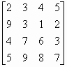
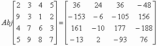
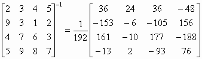

四階伴隨矩陣及行列式
更新日期: 2015年10月22日
程式需要在 REG Lin 模式下執行，因此在選擇新程式位置後，按 5 1 選用REG Lin模式。
注意: 藍色的英文字為統計模式中的變數(Σx 按 Shift 1 2，Σy 按 Shift 1 → 2，Σxy 按 Shift 1 → 3)。
程式(669 bytes)
ClrStat: ?→A: ?→B: ?→C: 1 ; 2-1(A+B-2C DT:
- 1 ; 2-1(A-B DT: 1 , 1 ; C DT: ?→D:
E-50 , 1 ; E50(D-C DT: ?→X: 0 , 1 ; - Σy DT: ?→Y:
; Y DT: , E-50 ; E50(X - Y DT: ?→A: ?→B: ?→C:
E-34 , 0 ; E68(C-Σx2 DT: E-50 ; - E50Σx DT:
; E50B DT: 0 ; -n DT: ; A DT: ?→A: ?→B: ?→C:
?→D: ?→X: ?→Y: ?→M: Σy2BM - Σy2CY - AnM +
AΣxY + XnC - XΣxB ; 0 DT: AnsΣx4 + ΣyΣx3(CY - BM) +
ΣyA(Σx2yM - ΣxyY) + ΣyX(ΣxyB - Σx2yC) +
Σx2Σx3(nM - ΣxY) + Σx2Σy2(ΣxyY - Σx2yM) +
Σx2X(Σx2yΣx - Σxyn) + DΣx3(ΣxB - nC) +
DΣy2(Σx2yC - ΣxyB) + DA(Σxyn - Σx2yΣx◢ ; 0 DT: Ans◢
Σx3CY - Σx3BM + AΣx2yM - AΣxyY - XΣx2yC + XΣxyB◢
Σx3nM - Σx3ΣxY - Σy2Σx2yM + Σy2ΣxyY + XΣx2yΣx - XΣxyn◢
Σx3ΣxB - Σx3nC + Σy2Σx2yC - Σy2ΣxyB - AΣx2yΣx + AΣxyn◢
ΣyCY - ΣyBM + Σx2nM - Σx2ΣxY - DnC + DΣxB◢
Σx4BM - Σx4CY - Σx2Σx2yM + Σx2ΣxyY + DΣx2yC - DΣxyB◢
Σx4ΣxY - Σx4nM + ΣyΣx2yM - ΣyΣxyY - DΣx2yΣx + DΣxyn◢
Σx4nC - Σx4ΣxB - ΣyΣx2yC + ΣyΣxyB + Σx2Σx2yΣx - Σx2Σxyn◢
ΣyAM - ΣyCX - Σx2Σy2M + Σx2ΣxX + DΣy2C - DΣxA◢
Σx4CX - Σx4AM + Σx2Σx3M - Σx2ΣxyX - DΣx3C + DΣxyA◢
Σx4Σy2M - Σx4ΣxX - ΣyΣx3M + ΣyΣxyX + DΣx3Σx - DΣxyΣy2◢
Σx4ΣxA - Σx4Σy2C + ΣyΣx3C - ΣyΣxyA - Σx2Σx3Σx + Σx2ΣxyΣy2◢
ΣyBX - ΣyAY + Σx2Σy2Y - Σx2nX - DΣy2B + DnA◢
Σx4AY - Σx4BX - Σx2Σx3Y + Σx2Σx2yX + DΣx3B - DΣx2yA◢
Σx4nX - Σx4Σy2Y + ΣyΣx3Y - ΣyΣx2yX - DΣx3n + DΣx2yΣy2◢
Σx4Σy2B - Σx4nA - ΣyΣx3B + ΣyΣx2yA + Σx2Σx3n - Σx2Σx2yΣy2
例題: 計算下列矩陣的伴隨矩陣及逆矩陣。

按 Prog 1 再按 2 EXE 3 EXE 4 EXE 5 EXE 9 EXE 3 EXE 1 EXE 2 EXE
4 EXE 7 EXE 6 EXE 3 EXE 5 EXE 9 EXE 8 EXE 7 EXE (顯示行列式為192)
EXE (顯示 36) EXE (顯示24) EXE (顯示 36) EXE (顯示 - 48)
EXE (顯示 - 153) EXE (顯示 - 6) EXE (顯示 - 105) EXE (顯示 156)
EXE (顯示 161) EXE (顯示 - 10) EXE (顯示 177) EXE (顯示 - 188)
EXE (顯示 - 13) EXE (顯示2) EXE (顯示 - 93) EXE (顯示 76)
所以


返回 CASIO fx-50FH、fx-3650P II、fx-50FH II及fx-50F PLUS 程式集